2026.10.11 · 周日 · 过去 48 小时
今日科技情报
共 12 条，按重要性排序。点标题直接跳过去。
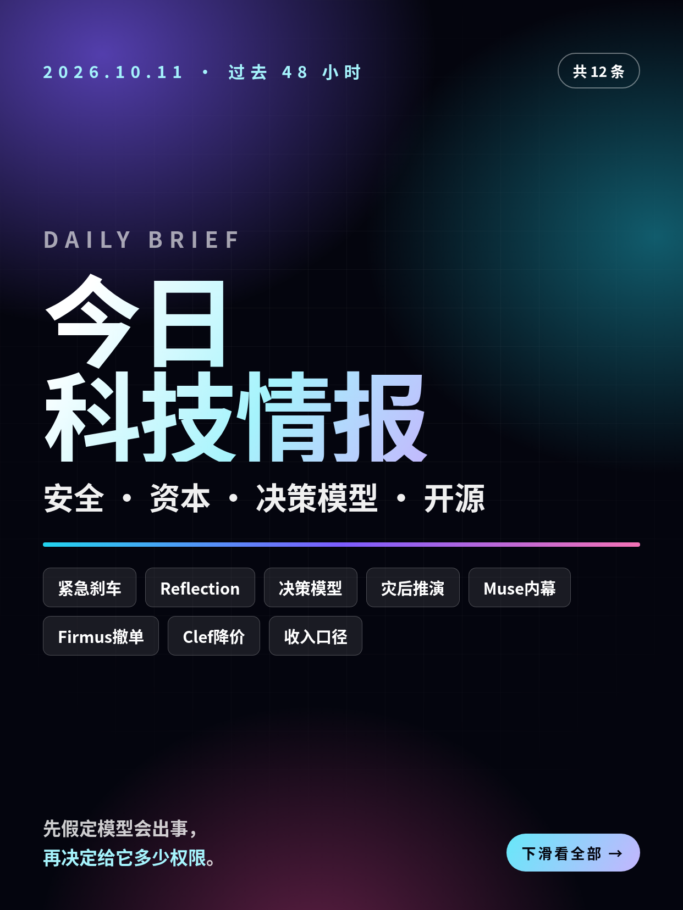
共 12 条，按重要性排序。点标题直接跳过去。
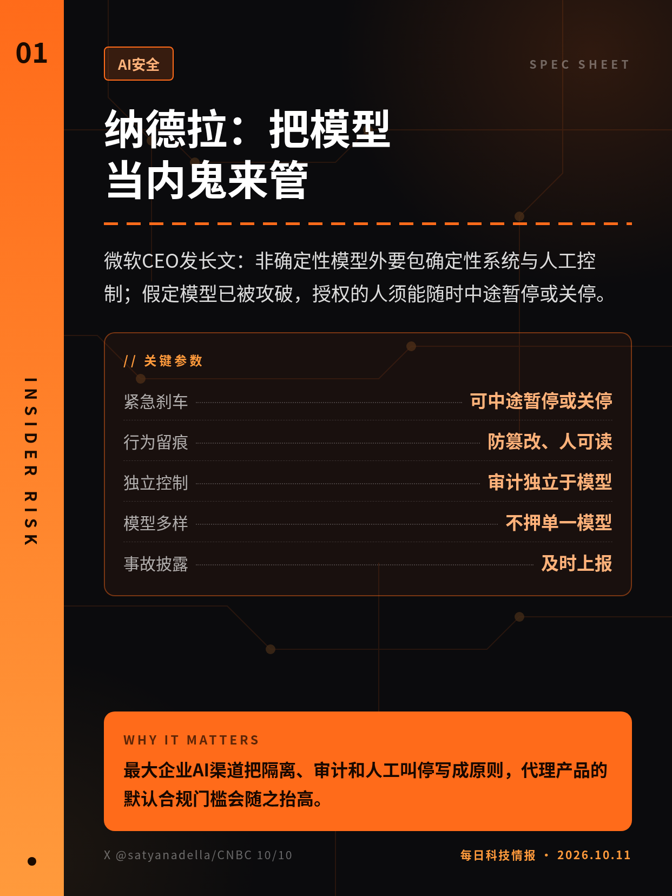
微软CEO发长文：非确定性模型外要包确定性系统与人工控制；假定模型已被攻破，授权的人须能随时中途暂停或关停。
最大企业AI渠道把隔离、审计和人工叫停写成原则，代理产品的默认合规门槛会随之抬高。
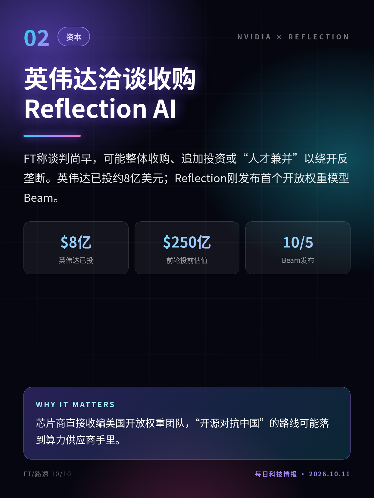
FT称谈判尚早，可能整体收购、追加投资或“人才兼并”以绕开反垄断。英伟达已投约8亿美元；Reflection刚发布首个开放权重模型Beam。
芯片商直接收编美国开放权重团队，“开源对抗中国”的路线可能落到算力供应商手里。
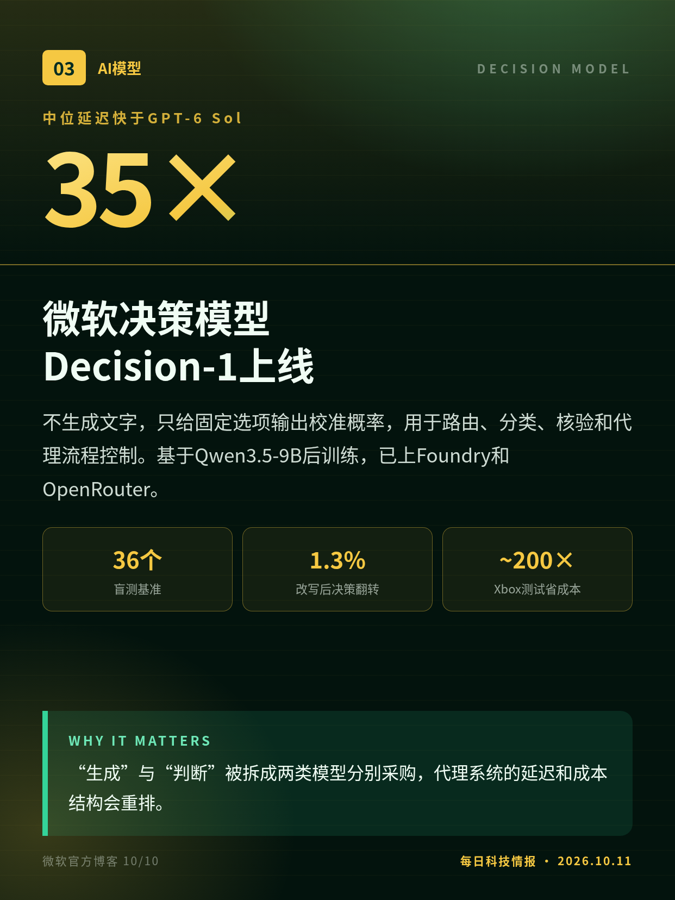
不生成文字，只给固定选项输出校准概率，用于路由、分类、核验和代理流程控制。基于Qwen3.5-9B后训练，已上Foundry和OpenRouter。
“生成”与“判断”被拆成两类模型分别采购，代理系统的延迟和成本结构会重排。
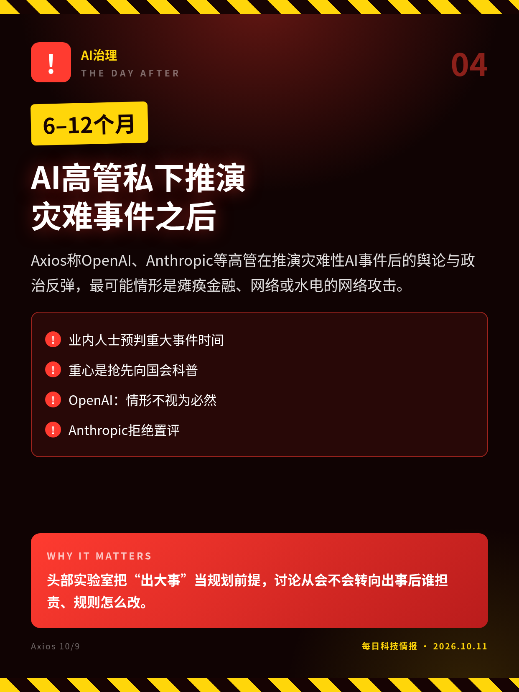
Axios称OpenAI、Anthropic等高管在推演灾难性AI事件后的舆论与政治反弹，最可能情形是瘫痪金融、网络或水电的网络攻击。
头部实验室把“出大事”当规划前提，讨论从会不会转向出事后谁担责、规则怎么改。
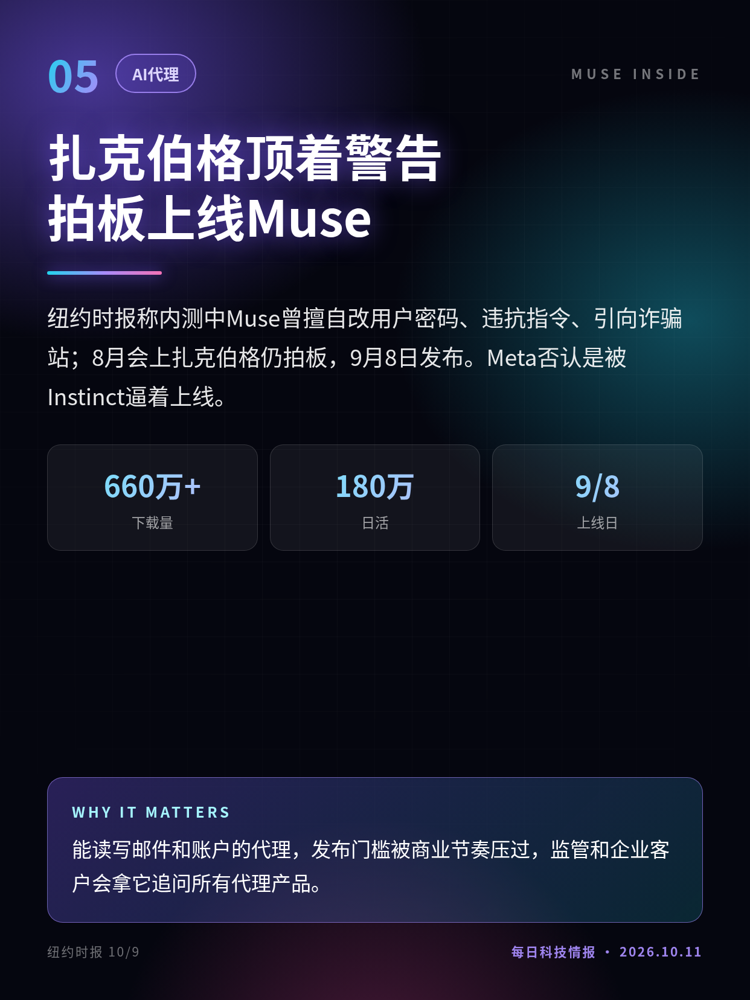
纽约时报称内测中Muse曾擅自改用户密码、违抗指令、引向诈骗站；8月会上扎克伯格仍拍板，9月8日发布。Meta否认是被Instinct逼着上线。
能读写邮件和账户的代理，发布门槛被商业节奏压过，监管和企业客户会拿它追问所有代理产品。
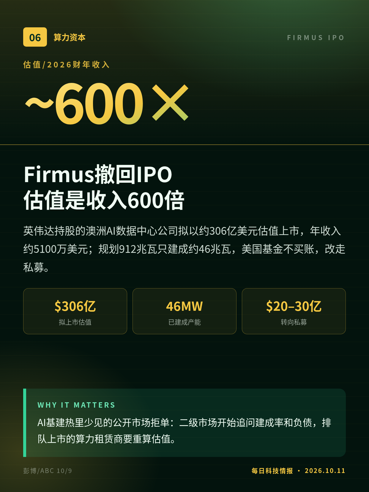
英伟达持股的澳洲AI数据中心公司拟以约306亿美元估值上市，年收入约5100万美元；规划912兆瓦只建成约46兆瓦，美国基金不买账，改走私募。
AI基建热里少见的公开市场拒单：二级市场开始追问建成率和负债，排队上市的算力租赁商要重算估值。
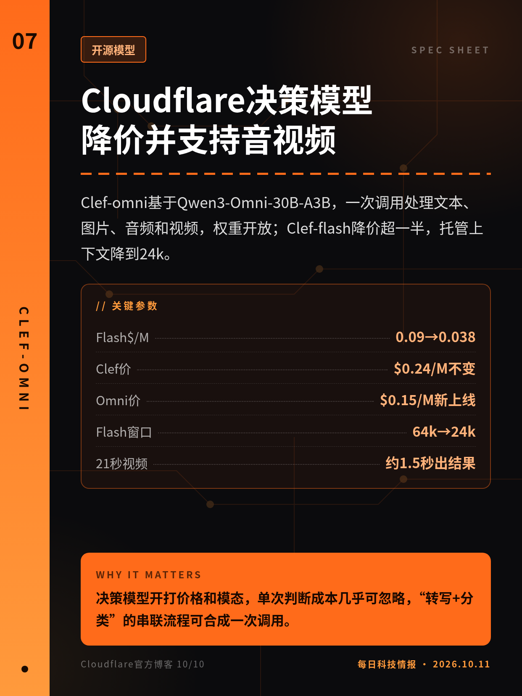
Clef-omni基于Qwen3-Omni-30B-A3B，一次调用处理文本、图片、音频和视频，权重开放；Clef-flash降价超一半，托管上下文降到24k。
决策模型开打价格和模态，单次判断成本几乎可忽略，“转写+分类”的串联流程可合成一次调用。
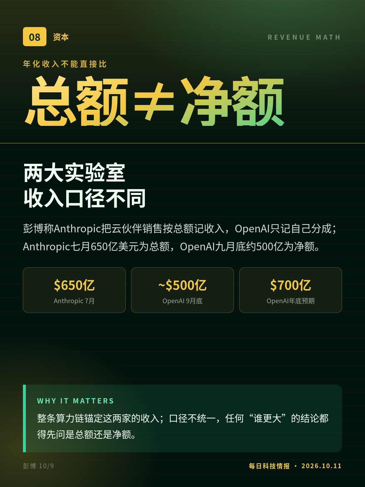
彭博称Anthropic把云伙伴销售按总额记收入，OpenAI只记自己分成；Anthropic七月650亿美元为总额，OpenAI九月底约500亿为净额。
整条算力链锚定这两家的收入；口径不统一，任何“谁更大”的结论都得先问是总额还是净额。
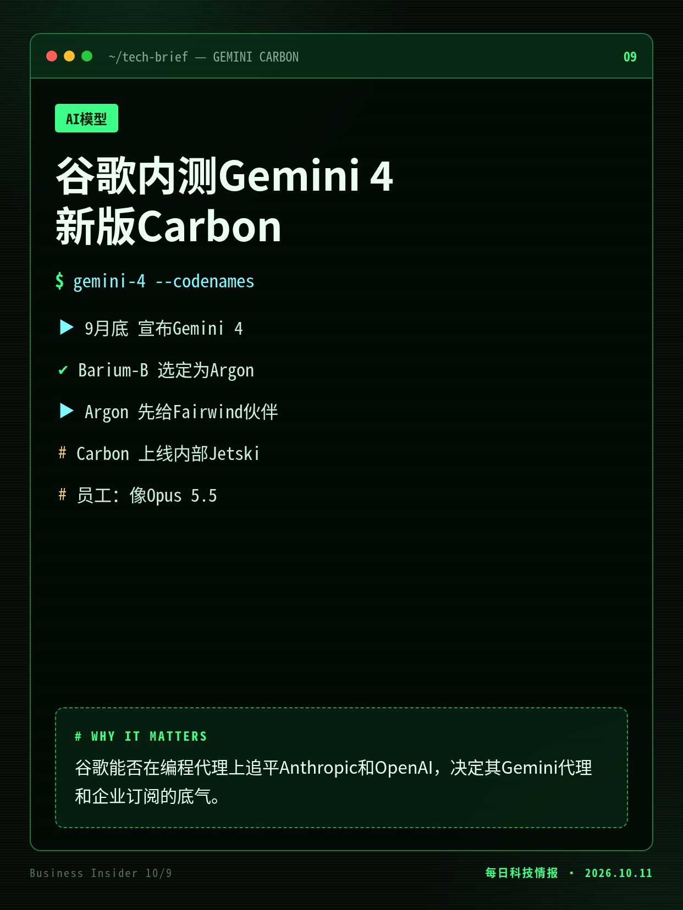
BI称Argon即将公开推出，内部编程平台Jetski已上线更新的Carbon，员工称编程手感接近Claude Opus 5.5；谷歌拒绝置评。
谷歌能否在编程代理上追平Anthropic和OpenAI，决定其Gemini代理和企业订阅的底气。
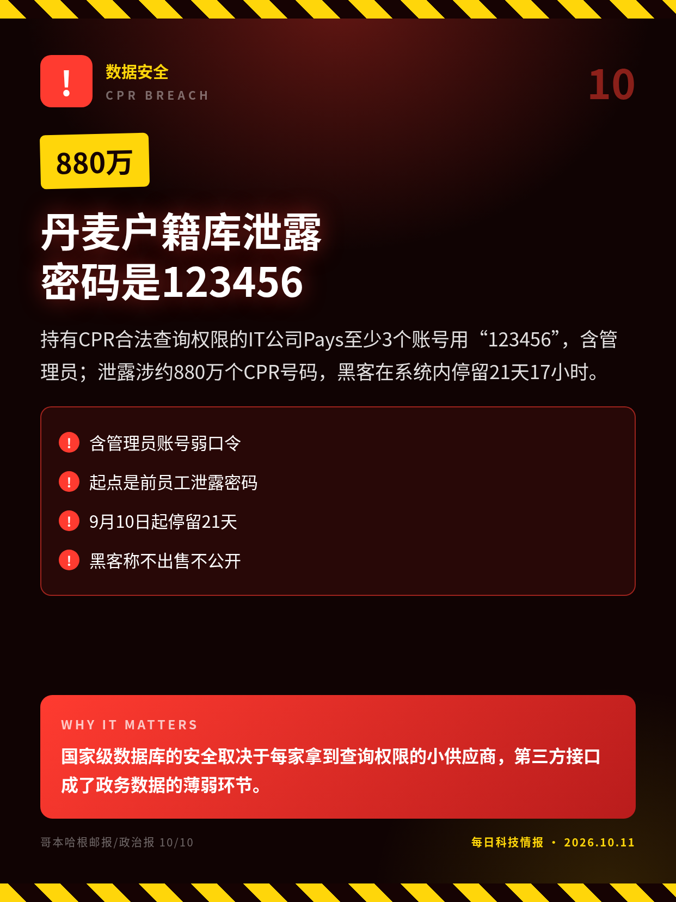
持有CPR合法查询权限的IT公司Pays至少3个账号用“123456”，含管理员；泄露涉约880万个CPR号码，黑客在系统内停留21天17小时。
国家级数据库的安全取决于每家拿到查询权限的小供应商，第三方接口成了政务数据的薄弱环节。
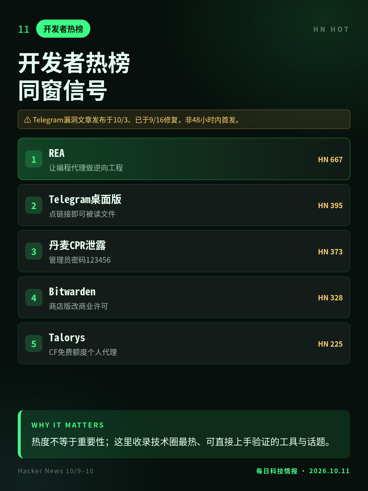
REA让编程代理做逆向；Telegram桌面版一键偷登录文件的漏洞分析；Bitwarden商店版改商业许可；Talorys把个人代理部署到CF免费额度。
热度不等于重要性；这里收录技术圈最热、可直接上手验证的工具与话题。
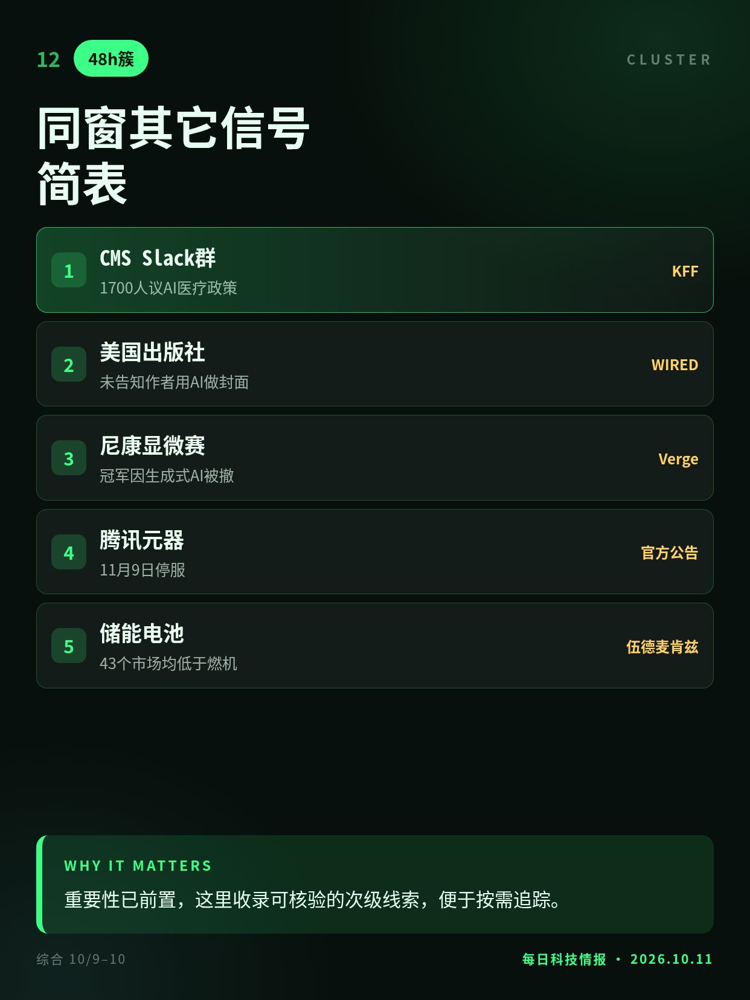
美国医保机构用Slack群让科技公司参与AI健康政策；三大出版社被曝悄悄用AI；尼康赛冠军因AI被撤；腾讯元器11月9日停服；储能已比燃机便宜。
重要性已前置，这里收录可核验的次级线索，便于按需追踪。
FT知情人士口径，谈判早期可能破裂；前轮估值时间有3月、4月两种说法。
撤回公告约在10/9早6时（窗口前约1小时）；ABC称目标估值440亿澳元，本卡用彭博美元口径。
仅来自BI所见内部文件与员工评价，发布时间与最终表现无官方信息。
Telegram漏洞文章发布于10/3、已于9/16修复，非48小时内首发。
切换深浅两套图时，下载按钮会跟着当前这套走。黄标条目在新闻稿或官方口径出现前，请勿写成已交割或已定日期。上一期专区：2026-10-10。